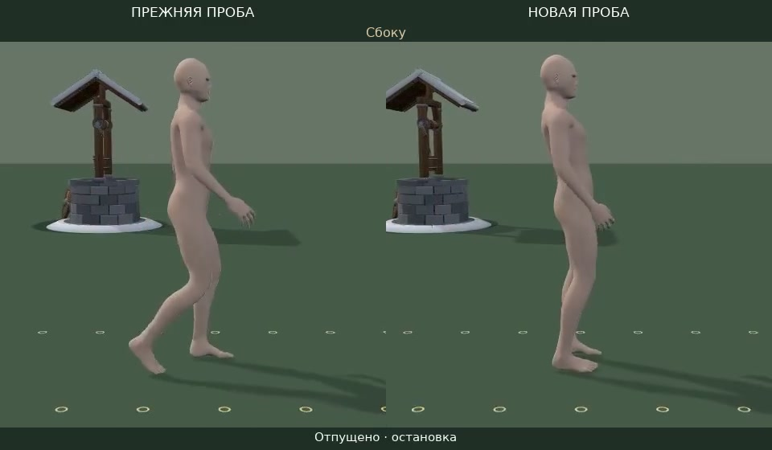

Персонаж · отдельная проба
Живая стойка и остановка.
Персонаж слегка дышит и переносит вес. После ходьбы и бега он тормозит перед возвращением в стойку. Присед в этой пробе временно отключён.
Прежняя сцена с приседом сохранена отдельно и не изменена.

01 / Ожидание
Посмотрите полный цикл.
Запись без звука: две сцены на месте, спереди и в три четверти. В прежней стойке тоже было небольшое дыхание.
14 секунд · без звука · прежний вариант слева, новый справа
02 / Движение
Ходьба, бег и остановка.
Одинаковые команды для двух сцен. Отпускание, остановка и прерванное торможение повторяются с четырёх ракурсов.
56 секунд · без звука · камера следует за персонажем; отметки на земле добавлены только для записи
Это рабочая проба, не физическая симуляция. Ограниченная фиксация стоп включается ближе к концу остановки, но скольжение в переходах всё ещё возможно. Видео и выборочные проверки не гарантируют естественность всех фаз; оцените также интерактивную сцену.
03 / Управление
Проверьте сами.
В сцене можно двигаться, останавливаться, прерывать торможение и поворачивать камеру.